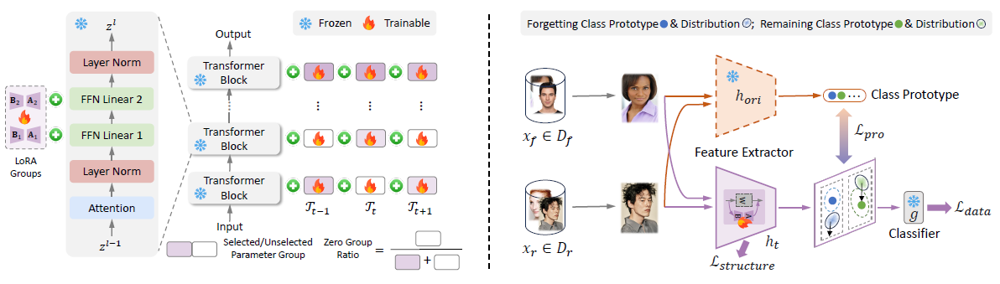

Abstract
For privacy and security concerns, the need to erase unwanted information from pre-trained vision models is becoming evident nowadays. In real-world scenarios, erasure requests originate at any time from both users and model owners, and these requests usually form a sequence. Therefore, under such a setting, selective information is expected to be continuously removed from a pre-trained model while maintaining the rest. We define this problem as continual forgetting and identify three key challenges.
To address them, we first propose Group Sparse LoRA (GS-LoRA). Specifically, towards (i), we introduce LoRA modules to fine-tune the FFN layers in Transformer blocks for each forgetting task independently, and towards (ii), a simple group sparse regularization is adopted, enabling automatic selection of specific LoRA groups and zeroing out the others. To further extend GS-LoRA to more practical scenarios, we incorporate prototype information as additional supervision and introduce a more practical approach, GS-LoRA++. For each forgotten class, we move the logits away from its original prototype. For the remaining classes, we pull the logits closer to their respective prototypes. We conduct extensive experiments on face recognition, object detection, and image classification and demonstrate that our method manages to forget specific classes with minimal impact on other classes.
Method

Selective forgetting
A bounded objective raises the cross-entropy on the forget set only as far as a threshold, so the model stops destroying itself once the knowledge is gone, while the remain set keeps its ordinary loss.
Group sparse selection
A group lasso over the LoRA groups drives whole blocks to exactly zero, so each erasure request touches only the few Transformer blocks it actually needs.
Prototype regularization
Class prototypes from the frozen original model give supervision that does not depend on having many samples — which is what makes GS-LoRA++ hold up in the few-shot and missing-data regimes.
Results
| Method | Tunable | H | Accr | Accf |
|---|---|---|---|---|
| Pre-trained | — | — | 74.31 | 74.65 |
| EWC | 99.73% | 67.71 | 61.95 | 0.00 |
| LwF | 99.73% | 69.43 | 65.04 | 0.21 |
| DER++ | 99.73% | 70.01 | 65.90 | 0.00 |
| SCRUB | 99.73% | 70.39 | 66.59 | 0.00 |
| Retrain | 100.0% | 17.29 | 9.77 | 0.00 |
| GS-LoRA | 1.28% | 74.40 | 74.16 | 0.00 |
| GS-LoRA++ | 1.28% | 73.97 | 74.16 | 0.00 |
Full tables — single-step forgetting, the 4-task continual setting, ImageNet-100, few-shot, and the missing-training-data setting — are in the paper. GS-LoRA++ is the variant that holds up when only a handful of samples per class are available.
Code
# clone and install git clone https://github.com/bjzhb666/GS-LoRA.git cd GS-LoRA pip install -e '.[dev]' # verify (no dataset needed) pytest -q
# single step: --num_tasks 1 # continual: --num_tasks 9 # missing class: --open_cls_num 10 python -m gslora.tools.train_forget \ -d casia100 -n VIT -head CosFace \ --method gslora --num_tasks 9 \ --lora_rank 8 --grouping block \ -r <pretrained.pth> --outdir ./exps/cl
One entry point covers every setting; --method also selects the baselines (l2, ewc, mas, lwf, der, fdr, scrub, lirf, retrain). See the repository README for dataset preparation.
Citation
@article{zhao2025practical,
title = {Practical Continual Forgetting for Pre-trained Vision Models},
author = {Zhao, Hongbo and Zhu, Fei and Ni, Bolin and Zhu, Feng and
Meng, Gaofeng and Zhang, Zhaoxiang},
journal = {IEEE Transactions on Pattern Analysis and Machine Intelligence},
year = {2026}
}
@inproceedings{zhao2024continual,
title = {Continual Forgetting for Pre-trained Vision Models},
author = {Zhao, Hongbo and Ni, Bolin and Wang, Haochen and Fan, Junsong and
Zhu, Fei and Wang, Yuxi and Chen, Yuntao and Meng, Gaofeng and
Zhang, Zhaoxiang},
booktitle = {CVPR},
year = {2024}
}